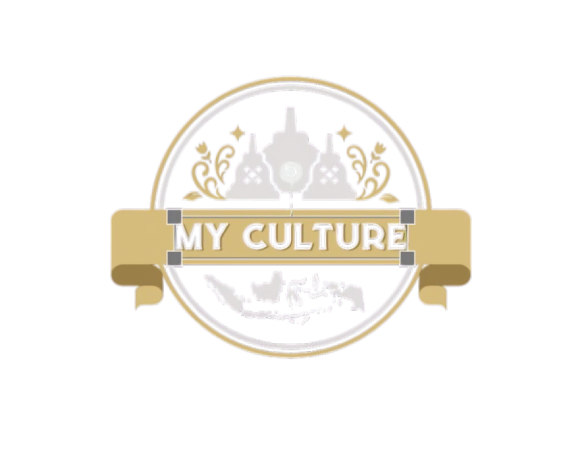

My Culture
Apa itu My Culture ?
My Culture adalah sebuah website yang dapat digunakan untuk melestarikan kebudayaan indonesia dengan cara mengupload konten konten kebudayaan di dalamnya.
Apa Manfaatnya ?
website ini menyediakan hadiah bagi orang yang mengupload konten kebudayaan indonesia di dalamnya. Secara tidak langsung hal tersebut juga bisa menjadi cara agar kebudayaan indonesia dapat tetap terlestarikan di era modern ini.